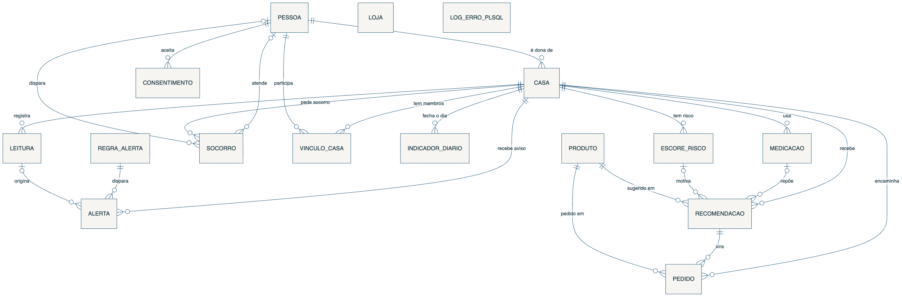
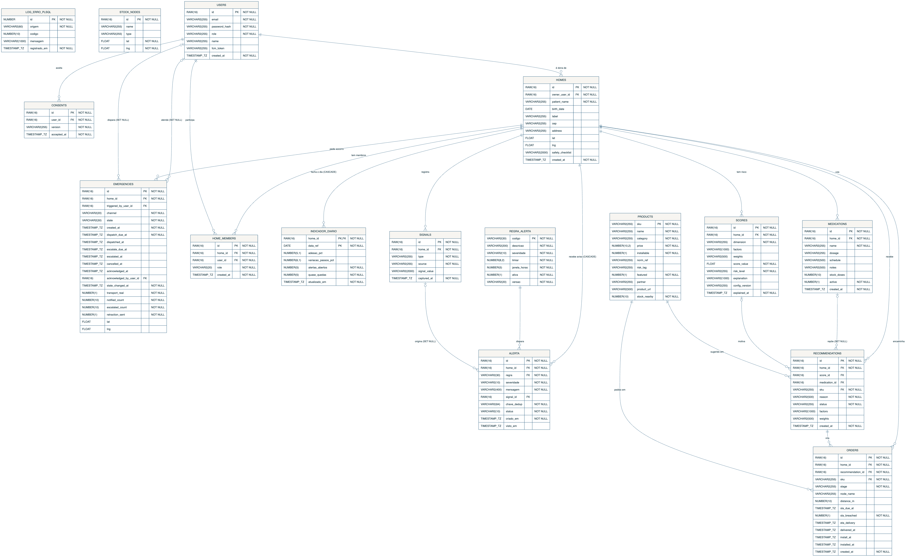
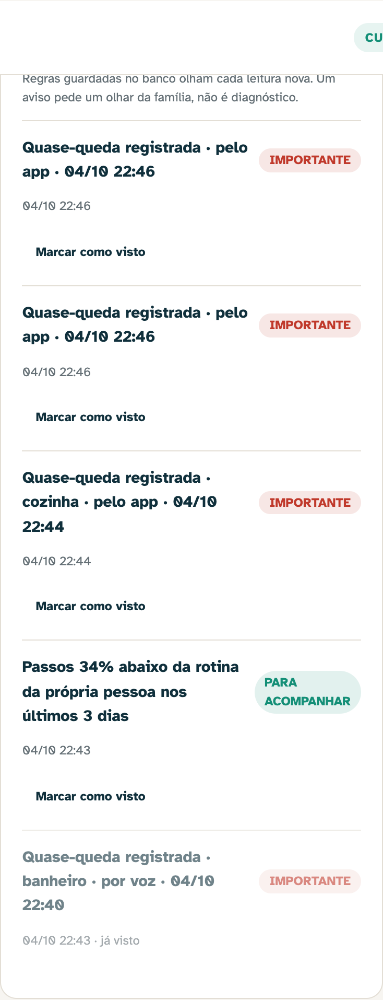
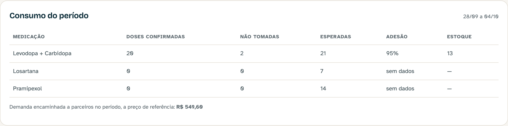
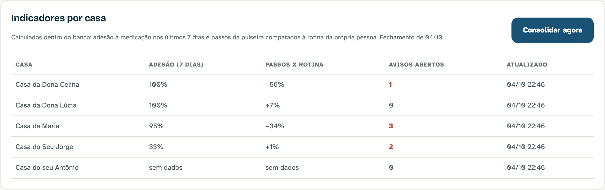

Documentação do projeto · Fase 6
Oracle PL/SQL integrado ao AURA: functions e procedures acionadas pelo back-end Java
AURA · Assistente Ubíquo de Resposta Ativa
Smart HAS · Enterprise Challenge 2026 (mentoria Leroy Merlin) · FIAP
| Nome completo | RM | Papel |
|---|---|---|
| Vinícius Miranda Baptista | 555081 | Tech Lead |
| João Domingos Góes Filho | 564465 | Dev Senior Mobile |
| Pedro Henrique Arenas Negri | 554971 | Dev Pleno |
| Júlia Alves Dias | 557151 | Infra |
| Entregável | Onde |
|---|---|
| Código-fonte | github.com/AuraSmartHAS/aura, branch fase6 (também na pasta codigo-fonte/ do ZIP) |
| Vídeo de até 5 min (YouTube, não listado) | «inserir link do YouTube (não listado)» |
| Apresentação (10 slides) | AURA - Apresentacao Fase 6.pdf |
| Scripts do banco (DDL, PL/SQL, carga, consultas) | banco-oracle/ no ZIP · database/oracle/ e backend-spring/src/main/resources/db/migration/oracle/ no repositório |
O AURA acompanha idosos em casa por voz e pulseira e ajuda a família a cuidar da casa antes que falte alguma coisa. Duas pessoas usam: Maria, 74 anos, com Parkinson, que fala com o app; e Ana, a filha, que acompanha pelo painel e aprova toda compra. Até a Fase 5 o sistema já tinha o app do idoso (Flutter), o app da família (React Native), a API em Spring Boot e o painel em Angular, todos falando com o mesmo contrato REST. O banco era H2 nos testes e PostgreSQL no ensaio, e servia só para guardar.
Na Fase 6 o banco passa a trabalhar. O mesmo back-end sobe sobre Oracle trocando apenas o perfil, o schema ganha chaves e regras que antes existiam só na cabeça do time, e uma camada de PL/SQL mede adesão, percebe mudança de rotina e grava avisos. O Java aciona essa camada sozinho, a cada leitura nova que chega pela API.
| Pedido do enunciado | O que entregamos | Onde |
|---|---|---|
| Parte 1 · aprimorar, novas funcionalidades, refatorar, documentar | Back-end multi-banco (H2, PostgreSQL e Oracle), avisos e relatório de consumo nas telas, código morto da logística removido, CI com job do Oracle | §2 · backend-spring/, web-admin/, .github/workflows/ci.yml |
| Parte 2 · modelo lógico/físico, tabelas implantadas, dados simulados, DER | 16 tabelas (12 do produto + 4 de inteligência), FKs com regra de apagamento, CSV da pulseira importado por SQL*Loader, carga de 3 casas, DER | §3 · db/migration/oracle/V1, V2 · database/oracle/ |
| Parte 3 · ≥ 2 functions, ≥ 2 procedures, uma acionada pelo back-end Java | 3 functions + 3 procedures (+ 3 rotinas de apoio); PRC_REGISTRAR_ALERTAS roda a cada leitura recebida pela API (REST → Java → JDBC → Oracle) | §4 · db/migration/oracle/R__0*.sql · pacote intelligence |
| Avaliação · documentação, código, slides, vídeo | Este PDF, o repositório, 10 slides e o vídeo com o sistema rodando sobre Oracle | ZIP da entrega |
O caminho mais curto para "usar Oracle" seria um projeto à parte, com JDBC puro, só para a disciplina. Descartamos:
duplicaria regra de negócio e deixaria o Oracle desligado do produto. Também descartamos colocar toda a lógica em
triggers: um trigger roda dentro do INSERT da leitura, então uma falha na regra de aviso
derrubaria a gravação do dado de saúde, e a lógica ficaria invisível para quem lê o Java.
A escolha foi tratar o Oracle como mais um perfil do mesmo back-end. O perfil oracle
liga o Flyway com uma pasta de migrations própria (db/migration/{vendor}), o Hibernate apenas
confere o schema na subida (ddl-auto: validate), e a inteligência em PL/SQL é acionada por um
evento de domínio publicado pelo Java depois que a leitura já foi gravada.
| Alternativa | Por que não |
|---|---|
| Projeto Oracle separado, só para a disciplina | Regra duplicada; o Oracle não participaria do produto nem da demo |
| Toda a lógica em triggers | Falha da regra derruba a gravação da leitura; lógica escondida do Java; difícil de testar ponta a ponta |
| Toda a lógica em Java (Oracle só como depósito) | Não atende ao enunciado e desperdiça o que o banco faz melhor: agregar perto do dado |
| Perfil + Flyway por banco + PL/SQL acionado por evento | Escolhida: mesmo código Java nos três bancos, schema versionado, chamada explícita e testável |
| Melhoria | Valor agregado |
|---|---|
Migrations separadas por banco (db/migration/postgresql e /oracle) |
O SQL de cada banco evolui sem vazar para o outro; bancos PostgreSQL existentes continuam válidos (move puro, mesmo checksum) |
Coluna scores.level renomeada para risk_level em todos os bancos |
LEVEL é palavra reservada no Oracle; renomear por migration manteve o mesmo nome físico em todos os bancos, sem aspas em nenhum SQL |
| Chaves estrangeiras reais no Oracle, com regra de apagamento caso a caso | O banco recusa órfão sozinho. Três caminhos que a FK quebraria foram corrigidos no Java, com teste que reproduz o problema antes da correção (§2.3) |
Porta CareIntelligence com dois adaptadores |
No Oracle, chama o PL/SQL; nos outros bancos, responde "indisponível" sem erro. A suíte rápida (H2) continua rodando sem Oracle |
| Avisos da casa, consumo do período e indicadores por casa no painel | A cuidadora vê o aviso que o banco gravou sem recarregar a página; a Operação fecha os indicadores do dia com um clique |
| Remoção do código morto da logística no painel | A tela de Operação buscava a cada 10 s uma carteira de pedidos que não mostrava desde que a entrega própria saiu do produto (D-008) |
Rótulos de tela centralizados (core/labels.ts) |
Vocabulário em português num lugar só, com teste; nenhum código cru (fall_bathroom) chega à tela |
| CI com job do Oracle e varredura semanal | A suíte Oracle roda num container quando muda o schema, o PL/SQL, as entidades ou a integração; a varredura semanal pega quebra que o filtro de caminho escondia (§2.4) |
CareIntelligence, não do
Oracle. OracleCareIntelligence (perfil oracle) chama as rotinas por
SimpleJdbcCall; CareIntelligenceUnavailable atende os demais perfis.LeituraRegistrada; um
@TransactionalEventListener(AFTER_COMMIT) chama a procedure numa transação própria
(REQUIRES_NEW). Sem transação própria, o INSERT do aviso cairia numa transação que ninguém
confirma e sumiria em silêncio. Se o Oracle falhar, a leitura já está salva: o aviso nunca derruba a coleta.409 em vez de 500; excluir uma medicação desvincula a
recomendação de refil em vez de quebrar; excluir a conta de quem disparou ou atendeu um SOS mantém o registro do
socorro para a casa. Cada caso tem um teste que reproduz o problema.
Ao mexer no painel, a suíte unitária não compilava: o tipo do catálogo tinha ganhado dois campos (parceiro e link) e
o teste de salvar produto não acompanhou. A main estava verde mesmo assim, porque o filtro de caminho do
CI pulava o job do painel quando o commit só tocava o back-end, e "pulado" contava como sucesso. Corrigimos o teste
e acrescentamos ao CI uma varredura semanal que roda todos os projetos sem filtro.
A casa é o centro do modelo. Uma pessoa (USERS) é dona de casas e se vincula a outras por
HOME_MEMBERS, com papel de dono, cuidadora ou paciente. Cada casa acumula leituras
(SIGNALS: voz, relato pelo app, uso do app e pulseira), medicações com seus horários,
escores de risco explicados por dimensão e recomendações de itens do catálogo, que só
viram pedido (ORDERS) com aprovação humana. Os pedidos de socorro (EMERGENCIES) guardam quem
disparou e quem atendeu. As quatro tabelas novas da Fase 6 se penduram na casa: as regras de aviso, os
avisos que elas geram, o indicador diário e o log de erro das rotinas.
As duas figuras a seguir estão em páginas paisagem. Os arquivos em resolução cheia vão na pasta banco-oracle/der/ do ZIP.


USER_TAB_COLUMNS e USER_CONSTRAINTS; a fonte Mermaid está em docs/fase6/der/.| No Java | No Oracle | Por quê |
|---|---|---|
UUID | RAW(16) | O Oracle não tem tipo UUID; RAW(16) é o que o Hibernate espera e o mesmo formato de SYS_GUID() |
Instant | TIMESTAMP(6) WITH TIME ZONE | Instante absoluto; o dia da família é calculado em America/Sao_Paulo no PL/SQL |
boolean | NUMBER(1) + CHECK (x IN (0,1)) | O BOOLEAN de SQL só existe no 23ai; o servidor da FIAP pode ser 19c |
double · BigDecimal | FLOAT(53) · NUMBER(10,2) | Mapeamento padrão do dialeto Oracle do Hibernate |
JSON livre (Map, listas) | VARCHAR2(n CHAR) + CHECK (col IS JSON) | O banco recusa JSON malformado; o PL/SQL lê com JSON_VALUE e JSON_TABLE |
| Tabela | Guarda | Chaves |
|---|---|---|
USERS | Contas: cuidadora, paciente, profissional, administrador | PK id · UK email |
HOMES | Casa acompanhada e checklist de segurança (JSON) | FK dono → USERS |
HOME_MEMBERS | Vínculo pessoa-casa e papel | FK casa, FK pessoa · UK (casa, pessoa) |
CONSENTS | Aceite do termo LGPD por versão | FK pessoa |
SIGNALS | Leituras da casa (JSON) | FK casa · índice (casa, data) |
SCORES | Escore de risco explicável por dimensão | FK casa · CHECK 0–1 |
PRODUCTS | Catálogo multi-fornecedor | PK sku · CHECK preço ≥ 0 |
STOCK_NODES | Lojas e centros de distribuição | PK id |
MEDICATIONS | Medicações, horários (JSON) e estoque de doses | FK casa · CHECK estoque ≥ 0 |
RECOMMENDATIONS | Item sugerido e o motivo | FK casa, escore, medicação (SET NULL), produto |
ORDERS | Demanda aprovada e encaminhada ao parceiro | FK casa, recomendação, produto |
EMERGENCIES | Pedidos de socorro e seu ciclo | FK casa · FK quem disparou/atendeu (SET NULL) |
REGRA_ALERTA nova | Limiares versionados das regras de aviso | PK código · CHECK severidade |
ALERTA nova | Avisos gravados pela procedure | FK casa (CASCADE), regra, leitura (SET NULL) · UK (casa, regra, chave) |
INDICADOR_DIARIO nova | Fechamento diário por casa | PK (casa, data) · FK casa (CASCADE) |
LOG_ERRO_PLSQL nova | Falhas das rotinas, sem dado de saúde | PK identity |
home_id → HOMES, NO ACTION nas tabelas do produto: a exclusão LGPD apaga os filhos antes da casa; a FK garante que ninguém pule essa ordem.ALERTA e INDICADOR_DIARIO, CASCADE: são dado derivado da casa e saem junto com ela.sku → PRODUCTS, NO ACTION: item com histórico não some do catálogo; a API responde 409 antes de tentar.
O schema e o PL/SQL são migrations do Flyway: V1__esquema_aura.sql (12 tabelas),
V2__inteligencia_cuidado.sql (4 tabelas + carga das regras) e as repetíveis R__01_apoio,
R__02_functions e R__03_procedures, reaplicadas sempre que mudam. O back-end, ao subir no perfil
oracle, cria tudo num schema vazio e o Hibernate confere tabela por tabela. Para quem quer instalar sem o app
(SQL Developer ou o servidor Oracle da FIAP), database/oracle/instalar-tudo.sql é gerado das mesmas
migrations e para antes de criar qualquer coisa se o usuário já tiver uma tabela com nome do AURA: ele
nunca apaga trabalho de outra disciplina. Nada usa recurso exclusivo do 23ai (BOOLEAN em SQL, IF NOT EXISTS,
VALUES com várias linhas, SELECT sem FROM).
Além das contas e da casa da Maria que o app cria, a carga traz três casas com perfis opostos, para que os indicadores e os avisos tenham o que mostrar:
| Casa | Perfil simulado | O que o banco deve perceber |
|---|---|---|
| Dona Lúcia | Toma quase tudo no horário; rotina estável | Adesão alta, nenhum aviso |
| Seu Jorge | Esquece cerca de 4 em 10 doses; nada confirmado nas últimas 48 h | Avisos de doses não confirmadas e de adesão baixa |
| Dona Celina | Passos da pulseira caem pela metade nos últimos 3 dias | Aviso de mudança de rotina |
dados/leituras-pulseira.csv,
63 linhas) entram por SQL*Loader numa tabela de preparo e viram leituras com um MERGE.carga-simulada.sql): familiares, casas, medicações, 21 dias de doses
geradas por um bloco PL/SQL com cursor e loop, relatos e histórico de socorro.
Todas as rotinas recebem só o identificador da casa: quem pode ver qual casa é decidido no Java, antes da
chamada. Nenhuma procedure faz COMMIT, porque a transação é do Spring; a exceção é o log de erro, que roda
em transação autônoma justamente para sobreviver ao rollback de quem falhou. Erros de negócio usam a faixa
-20xxx, que o Java traduz em resposta HTTP.
| Objeto | Tipo | Papel no enunciado |
|---|---|---|
| FN_TAXA_ADESAO | function | Calcula um indicador relevante |
| FN_DESCREVER_LEITURA | function | Retorna dado formatado |
| FN_VARIACAO_ROTINA | function | Segundo indicador (rotina da própria pessoa) |
| PRC_REGISTRAR_ALERTAS | procedure | Registra avisos a partir de leituras críticas · acionada pelo Java |
| PRC_RELATORIO_CONSUMO | procedure | Relatório resumido de consumo por casa |
| PRC_CONSOLIDAR_INDICADORES | procedure | Rotina automatizada em lote (job diário) |
| FN_DOSES_ESPERADAS | apoio | Doses que a rotina pedia e já venceram, desde que o remédio começou a ser acompanhado |
| FN_UUID_TEXTO · PRC_LOG_ERRO | apoio | Conversão RAW ↔ texto do Java · log em transação autônoma |
p_home_id · p_medication_id (NULL = todas) · p_dias (padrão 7) · p_ate (padrão agora)NUMBER de 0 a 100 com uma casa, ou NULL sem dado. Teto de 100: dose confirmada fora do horário não vira 110%.NO_DATA_FOUND e ZERO_DIVIDE → NULL; janela inválida → ORA-20002; inesperada → log e relança.SELECT label, fn_taxa_adesao(id, NULL, 7) FROM homes; · também dentro do cursor do relatório e da regra ADESAO_BAIXAp_signal_idVARCHAR2 até 300 caracteres, no horário de Brasília. Ex.: "Quase-queda registrada · banheiro · pelo app · 04/10 14:32"; "Pulseira: 1.800 passos · sono 5,6 h · FC em repouso 79 bpm · pela pulseira · 04/10 07:00".p_home_id · p_metrica · p_dias_recentes (3) · p_dias_base (14)NUMBER, % de variação (−45,2 = 45,2% abaixo da rotina), ou NULL sem dado nas duas janelas.ORA-20003; ZERO_DIVIDE → NULL.ALERTA o que disparou.p_home_id (IN) · p_janela_horas (IN, NULL = a de cada regra) · p_novos (OUT, avisos novos)ORA-20404).REGRA_ALERTA e LOOP por elas.QUASE_QUEDA abre um segundo cursor e gera um aviso por leitura, com o texto de FN_DESCREVER_LEITURA; DOSES_NEGADAS conta doses não confirmadas na janela e só avisa de novo quando há negação nova; ADESAO_BAIXA usa FN_TAXA_ADESAO; ROTINA_PASSOS usa FN_VARIACAO_ROTINA.INSERT; a chave única (casa, regra, chave) faz a segunda execução não duplicar: DUP_VAL_ON_INDEX é tratado como "já avisado".-20xxx) sobe intacto; qualquer outra vai para LOG_ERRO_PLSQL e é relançada.p_home_id, p_de, p_ate (IN) · p_total_doses, p_total_reais (OUT) · p_itens (OUT SYS_REFCURSOR)ORA-20001 se invertido ou maior que um ano) e a casa (ORA-20404); percorre as medicações num CURSOR + LOOP somando as doses confirmadas; soma a demanda encaminhada a parceiros; abre o cursor de saída com uma linha por medicação, usando FN_DOSES_ESPERADAS e FN_TAXA_ADESAO dentro do SELECT (dose de hoje que ainda não chegou não conta como esperada).p_total_reais é a soma do preço de referência dos itens aprovados. Não é compra: a transação é do parceiro.INDICADOR_DIARIO, para cada casa, adesão de 7 dias, variação de passos, avisos em aberto e quase-quedas do dia.p_data_ref (IN, NULL = hoje) · p_casas (OUT, casas consolidadas)SAVEPOINT por casa → MERGE (rodar de novo no mesmo dia atualiza). Se uma casa falha, só o trabalho dela é desfeito (ROLLBACK TO SAVEPOINT), o erro vai para o log e o lote segue. Casa sem dado grava NULL, não zero.oracle) e sob demanda pelo botão "Consolidar agora" da Operação.POST /signalsLeituraRegistradaSimpleJdbcCall (JDBC)O evento e a chamada, como estão no código (backend-spring/src/main/java/br/com/fiap/aura/intelligence/):
// AlertasAoRegistrarLeitura.java — o evento de backend que aciona o PL/SQL
@TransactionalEventListener(phase = TransactionPhase.AFTER_COMMIT) // a leitura já foi gravada
@Transactional(propagation = Propagation.REQUIRES_NEW) // o aviso tem transação própria
public void aoRegistrarLeitura(LeituraRegistrada evento) {
if (!CareIntelligence.ORACLE.equals(intelligence.engine())) return;
try {
int novos = intelligence.registrarAlertas(evento.homeId());
...
} catch (RuntimeException e) {
log.warn("Avisos da casa {} não foram processados agora: {}", evento.homeId(), e.getMessage());
}
}
// OracleCareIntelligence.java — JDBC puro, parâmetros declarados (sem ler metadados do banco)
this.registrarAlertas = new SimpleJdbcCall(jdbc)
.withProcedureName("PRC_REGISTRAR_ALERTAS")
.withoutProcedureColumnMetaDataAccess()
.declareParameters(
new SqlParameter("p_home_id", Types.BINARY), // UUID -> RAW(16)
new SqlParameter("p_janela_horas", Types.NUMERIC),
new SqlOutParameter("p_novos", Types.NUMERIC));
Rotas novas, todas atrás da mesma checagem de acesso das demais (só quem é da casa ou o administrador):
GET /homes/{id}/alertas, POST /homes/{id}/alertas/processar, POST /alertas/{id}/visto,
GET /homes/{id}/relatorio-consumo e, só para administrador, GET /ops/indicadores e
POST /ops/indicadores/consolidar. O texto de cada aviso passa pelo mesmo guardrail de
não-prescrição do resto da API; um aviso que não passe é omitido da lista em vez de derrubá-la.
| Requisito | Onde |
|---|---|
Parâmetros IN e RETURN | As três functions (R__02_functions.sql) |
EXCEPTION | NO_DATA_FOUND, ZERO_DIVIDE, DUP_VAL_ON_INDEX, VALUE_ERROR, erros de negócio -20001, -20002, -20003, -20404 |
IF | Uma regra por ramo em PRC_REGISTRAR_ALERTAS; validações de período e casa |
LOOP + CURSOR | Regras ativas e quase-quedas (alertas), medicações (relatório), casas (consolidação), doses da carga simulada |
| Resultado em cursor | SYS_REFCURSOR em PRC_RELATORIO_CONSUMO |
| Function integrada a consulta SQL | database/oracle/consultas-demo.sql, blocos 1 a 4; FN_TAXA_ADESAO dentro do cursor do relatório |
| Procedure acionada por evento de back-end | PRC_REGISTRAR_ALERTAS a cada POST /signals e confirmação de dose (§4.3) |
| Rotina automatizada | PRC_CONSOLIDAR_INDICADORES, agendada e sob demanda |
| Módulo | Testes | Comando | O que cobrem |
|---|---|---|---|
| Back-end, suíte rápida (H2) | 86 | ./mvnw test | Fluxos ponta a ponta, autorização, guardrail, os três caminhos de FK, adaptador indisponível |
| Back-end sobre Oracle | 51 | ./mvnw test -Dtest.groups=oracle -Dtest.excludedGroups= | Schema validado, 0 objetos inválidos, cada function e procedure, REST → Java → JDBC → Oracle |
| Back-end sobre PostgreSQL | 2 | ./mvnw test -Dtest.groups=postgres -Dtest.excludedGroups= | Migrations V1–V3 (inclui a renomeação de level) validadas contra as entidades; seed sem duplicar |
| Painel Angular | 31 | npx ng test --no-watch | Serviço de API (rotas novas), rótulos, interceptor, autenticação |
| Painel ponta a ponta | 8 | npm run e2e | Navegador real contra a API: risco explicado, aprovação humana, recusa, reposição, Operação e catálogo |
Saída real de database/oracle/consultas-demo.sql no Oracle Free 23.26, num banco recém-criado pelo docker compose da demo, logo após a carga simulada (04/10/2026).
-- BLOCO 1 · FN_TAXA_ADESAO dentro de um SELECT comum
CASA ADESAO_7_DIAS_PCT
Casa da Dona Lúcia 100
Casa da Dona Celina 100
Casa da Maria 95.2
Casa do Seu Jorge 33.3
Casa do seu Antônio <- sem medicação acompanhada: NULL, não 0%
-- BLOCO 2 · FN_DESCREVER_LEITURA: o JSON gravado e a frase que a família lê
{"event":"near_fall","place":"bathroom"} Quase-queda registrada · banheiro · por voz · 04/10 22:52
{"steps":1800,"heartRateResting":79,"sleepHours":5.6} Pulseira: 1.800 passos · sono 5,6 h · FC em repouso 79 bpm · pela pulseira · 03/10 22:40
-- BLOCO 3 · FN_VARIACAO_ROTINA (últimos 3 dias contra os 14 anteriores)
CASA PASSOS_VAR_PCT SONO_VAR_PCT FC_REPOUSO_VAR_PCT
Casa da Dona Celina -55.8 -21.9 12.4
Casa da Maria -34 -11.4 5.6
-- BLOCO 5 · avisos gravados por PRC_REGISTRAR_ALERTAS, com a regra que disparou
Casa do Seu Jorge DOSES_NEGADAS atencao 6 doses não confirmadas nas últimas 48 h
Casa do Seu Jorge ADESAO_BAIXA atencao Adesão de 33,3% nos últimos 7 dias, pelas doses confirmadas no app
Casa da Maria ROTINA_PASSOS info Passos 34% abaixo da rotina da própria pessoa nos últimos 3 dias
Casa da Maria QUASE_QUEDA alta Quase-queda registrada · banheiro · por voz · 04/10 22:52
Casa da Dona Celina ROTINA_PASSOS info Passos 56% abaixo da rotina da própria pessoa nos últimos 3 dias
1ª chamada, avisos novos: 0
2ª chamada, avisos novos: 0 (não duplica)
-- BLOCO 6 · PRC_RELATORIO_CONSUMO (totais por OUT + SYS_REFCURSOR)
Consumo da Casa do Seu Jorge, 28/09 a 04/10
Medicação Conf. Não Esper. Adesão Estoque
Losartana 2 5 7 28.6% 18
Metformina 5 9 14 35.7% 6
Doses confirmadas no período: 7
Demanda encaminhada a parceiros (preço de referência): R$ 189,80
Recusado pelo banco: ORA-20001: Período inválido: a data final vem antes da inicial
-- BLOCO 7 · PRC_CONSOLIDAR_INDICADORES
Casas consolidadas: 5
-- Conferência: os 9 objetos PL/SQL (3 functions + 3 procedures + 3 de apoio) com STATUS = VALIDPOST /api/v1/signals {"type":"mobility","value":{"event":"near_fall","place":"kitchen"}} -> 201
GET /api/v1/homes/{casa}/alertas (requisição separada)
alta aberto Quase-queda registrada · cozinha · pelo app · 04/10 22:53 <- gravado pela procedure
info aberto Passos 34% abaixo da rotina da própria pessoa nos últimos 3 dias
GET /api/v1/homes/{casa}/relatorio-consumo?de=2026-10-04&ate=2026-09-01 -> 422 (ORA-20001)
GET /api/v1/ops/indicadores com conta de cuidadora -> 403


# Requer Docker. Na raiz do repositório:
export AURA_DB_PASSWORD='uma-senha-sua'
docker compose -f docker-compose.yml -f docker-compose.oracle.yml up --build -d
# Oracle Free na 1521 (só local), API na 8080, painel na 4200
./database/oracle/carregar-dados.sh # CSV da pulseira (SQL*Loader) + carga simulada
# SQL Developer: usuário aura, a senha acima, localhost:1521, serviço FREEPDB1
# abra database/oracle/consultas-demo.sql e rode bloco a bloco
# Painel: http://localhost:4200
# ana@aura.com / aura1234 casa da Maria: avisos e consumo
# admin@aura.com / aura1234 Operação: indicadores por casa
Sem Docker, o back-end continua subindo em H2 (./mvnw spring-boot:run); nesse modo os cards de avisos e
consumo não aparecem, porque a inteligência mora no Oracle. Para instalar só o banco num Oracle existente, use
database/oracle/instalar-tudo.sql (§3.6).